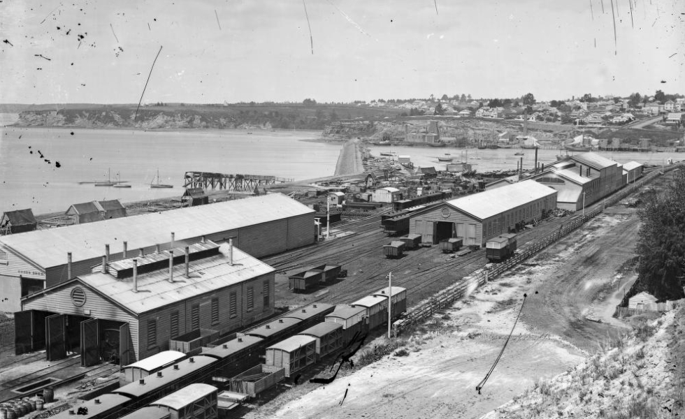

1928–1930
A new gateway for Auckland
Built by the New Zealand Public Works Department on reclaimed land near the waterfront, the new station replaced Auckland's smaller terminal near Britomart. It officially opened on 16 November 1930.
At £320,000, its construction was the largest independent contract awarded in New Zealand at the time. Architect William Henry Gummer shaped it as a monumental Beaux-Arts gateway to the city.